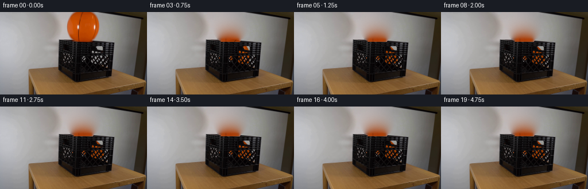
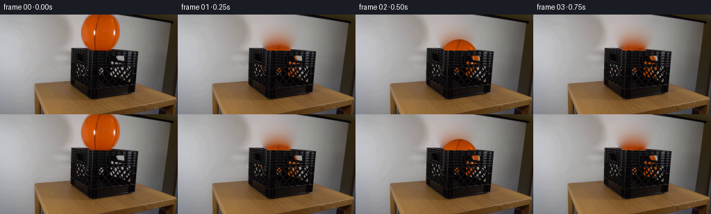
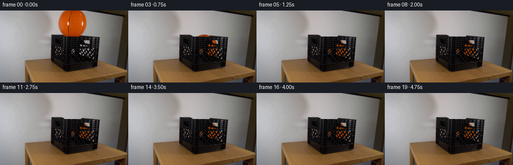
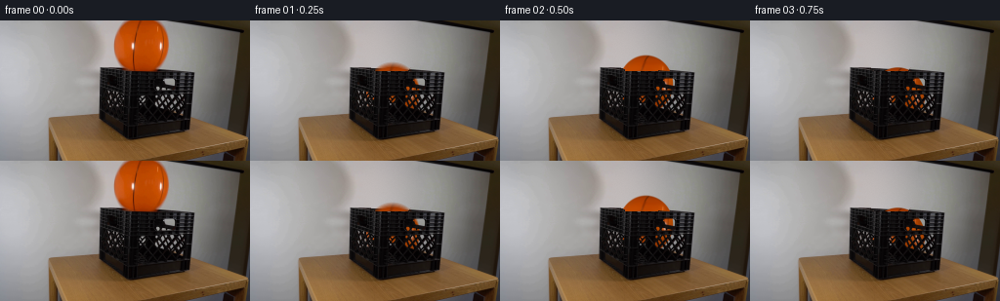
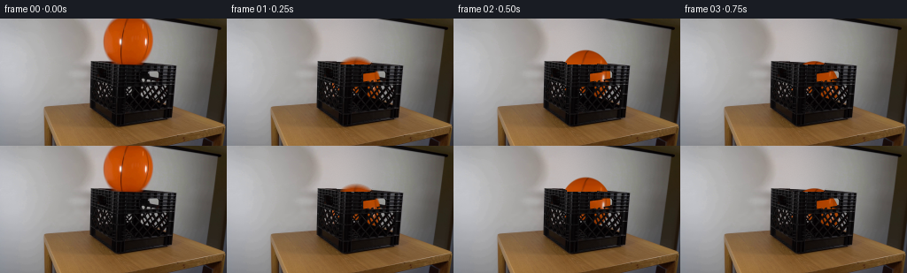

← 本轮 smoke 总览traex/GPT-6-Astra · 0013
text · 256×144 · 4.0 FPS · 20 帧 · 状态 complete · 输出 tokens 29612
原始任务Static locked-off single-shot with fixed frame throughout filmed with constant framerate in real-time. The scene shows a realistic scientific demonstration. The scene only contains the described setup and actions. The black plastic crate sits on a wooden table. The orange inflatable basketball is released over the black plastic crate.
当前保存结果
已保存候选与代码修改
这里按时间展示外部捕获的候选，每份均可单独播放。保存新版本不等于完成视觉检查；下方工具证据记录实际看过的图。
候选 01 · 2026-11-08T22:34:49.046656+00:00 · 点开播放与检查图
inspection.png

transition_check.png

代码变化
--- 上一保存版本
+++ 本次保存版本
@@ -0,0 +1,206 @@
+from pathlib import Path
+import numpy as np
+from PIL import Image
+from scipy import ndimage, interpolate
+from artifact_io import save
+
+ROOT = Path(__file__).resolve().parent
+H,W = 144,256
+SOURCE = np.asarray(Image.open(ROOT/'first_frame.png').convert('RGB'), dtype=np.float64)
+Y,X = np.mgrid[:H,:W].astype(float)
+CX,CY = 144.446,24.830
+RX,RY = 27.734,29.588
+rng = np.random.default_rng(17421)
+
+def smoothstep(a,b,x):
+ q=np.clip((x-a)/(b-a),0,1)
+ return q*q*(3-2*q)
+
+def sample(im,x,y):
+ return np.stack([ndimage.map_coordinates(im[...,c],[y,x],order=1,mode='nearest') for c in range(3)],axis=-1)
+
+# A smooth reconstruction of the small portion of the backdrop hidden by the
+# sphere. Its boundary values and color gradients come exclusively from the
+# surrounding pixels in the photograph.
+rho=np.sqrt(((X-CX)/RX)**2+((Y-CY)/RY)**2)
+wall_known=(X>=104)&(X<=189)&(Y<48)&(rho>1.12)&(SOURCE.mean(2)>135)
+xx=(X-CX)/45; yy=(Y-24)/30
+features=np.stack([np.ones_like(X),xx,yy,xx*xx,xx*yy,yy*yy,xx**3,xx*xx*yy,xx*yy*yy,yy**3],axis=-1)
+coef=np.linalg.lstsq(features[wall_known],SOURCE[wall_known],rcond=None)[0]
+wall=np.einsum('hwk,kc->hwc',features,coef)
+# Harmonic low-frequency correction makes the newly uncovered area meet the
+# actual wall without a conspicuous oval boundary.
+unknown=(rho<1.12)&(Y<48)
+correction=SOURCE-wall
+correction[unknown]=0
+for _ in range(650):
+ avg=(np.roll(correction,1,axis=1)+np.roll(correction,-1,axis=1)+np.roll(correction,1,axis=0)+np.roll(correction,-1,axis=0))*.25
+ avg[0]=(correction[0]+correction[1]+np.roll(correction[0],1,axis=0)+np.roll(correction[0],-1,axis=0))*.25
+ correction[unknown]=avg[unknown]
+wall+=correction
+noise=rng.normal(0,.62,(H,W,1))+rng.normal(0,.23,(H,W,3))
+wall[unknown]+=noise[unknown]
+# Extend the clean wall just below the removed sphere, above the crate lip.
+for y in range(48,55):
+ wall[y,118:168]=wall[47,118:168]+np.array([-.35,-.25,-.25])*(y-47)
+
+# The crate and the table remain stationary. Only the few lip pixels originally
+# covered by the ball need reconstruction, using another piece of the same lip.
+clean=SOURCE.copy()
+clean[unknown]=wall[unknown]
+edge=np.interp(np.arange(W),[102,124,135,161,199],[47.6,48.6,51.6,50.7,52.6])
+# In the central span the camera-facing lip occludes the bottom of the sphere.
+edge[128:162]=51.45
+for y in range(48,54):
+ for x in range(122,165):
+ contaminated=(SOURCE[y,x,0]-SOURCE[y,x,1]>12)
+ if not contaminated: continue
+ sx=166+(x-122)%22
+ sy=y+(50.25+.058*(sx-166)-edge[x])
+ rim=sample(SOURCE,np.array([float(sx)]),np.array([float(sy)]))[0]
+ a=float(smoothstep(edge[x]-.60,edge[x]+.65,y))
+ clean[y,x]=wall[y,x]*(1-a)+rim*a
+# A little red color spill at the original point of contact is also removed.
+for y in range(52,55):
+ for x in range(132,164):
+ if SOURCE[y,x,0]-SOURCE[y,x,1]>7:
+ v=clean[y,x].copy()
+ if y>=53: v=SOURCE[y,x].copy()
+ l=(v[1]+v[2])*.5
+ clean[y,x]=[l+1,l,l+1]
+
+# Measure the actual open lattice from the original pixels, retaining all ribs,
+# molded highlights, the handles and antialiased edges of the crate.
+lum=SOURCE.mean(2)
+crate_region=(X>103)&(X<196)&(Y>=58)&(Y<99)
+# Connected bright apertures, as opposed to highlights on the opaque plastic.
+labels,n=ndimage.label(crate_region & (lum>46))
+hole_alpha=np.zeros((H,W)); hole_bg=np.zeros_like(SOURCE)
+for lab in range(1,n+1):
+ m=labels==lab
+ if m.sum()<3 or lum[m].max()<114: continue
+ vals=SOURCE[m]
+ white=vals[vals.mean(1)>np.percentile(vals.mean(1),72)].mean(0)
+ if not np.all(np.isfinite(white)): white=vals.mean(0)
+ # Nearby edge pixels contribute partial coverage, but not molded bars.
+ expanded=ndimage.binary_dilation(m,iterations=1)&crate_region&(lum>20)
+ a=np.clip((lum-15)/(white.mean()-15),0,1)*expanded
+ use=a>hole_alpha
+ hole_bg[use]=white
+ hole_alpha[use]=a[use]
+
+# Texture atlas. The central ball pixels (including markings and the fine rubber
+# texture) are reused; only the cap above the image and the occluded bottom are
+# extended mathematically. Texture and sphere coverage are kept separate.
+N=241
+axis=np.linspace(-1.20,1.20,N)
+v,u=np.meshgrid(axis,axis,indexing='ij')
+r=np.sqrt(u*u+v*v)
+rr=np.minimum(r,.922)/np.maximum(r,1e-6)
+su=u*rr; sv=v*rr
+sx=CX+su*RX; sy=CY+sv*RY
+tex=sample(SOURCE,sx,sy)
+# The missing cap continues the surface shading and the existing panel seams.
+red=194-30*v*v-22*v**8+8*u*u-1.3*v
+green=74-19*v*v-7*v**8+4*u*u-1.6*v
+blue=1.7+5*np.clip(-u-.4,0,1)
+cap=np.stack([red,green,blue],axis=-1)
+root=np.sqrt(np.maximum(0,1-v*v))
+seam1=-.270*root-.11*v
+seam2=.744*root-.12*v
+seam=np.exp(-((u-seam1)*RX/.78)**4)+.7*np.exp(-((u-seam2)*RX/.63)**4)
+cap*=1-.34*np.clip(seam,0,1)[...,None]
+cap+=rng.normal(0,.75,(N,N,1))
+blend=smoothstep(.0,3.0,sy)*(1-smoothstep(48.0,50.2,sy))
+tex=tex*blend[...,None]+cap*(1-blend[...,None])
+tex*=1-.055*smoothstep(.92,1.02,r)[...,None]
+tex=np.clip(tex,0,255)
+
+# Ball motion in pixel-space: free fall, elastic impact on the crate floor,
+# damped rebounds, followed by a very small settling roll. No camera motion.
+G=1580.0
+FLOOR_CY=84.5
+RESTITUTION=.61
+impact=np.sqrt(2*(FLOOR_CY-CY)/G)
+first_speed=G*impact
+
+def motion(t):
+ if t<impact:
+ cy=CY+.5*G*t*t
+ speed=G*t
+ squash=0.
+ cx=CX+4.0*t
+ angle=.022*t
+ else:
+ q=t-impact
+ v0=first_speed*RESTITUTION
+ bounce=0
+ while q>2*v0/G and v0>9:
+ q-=2*v0/G
+ v0*=RESTITUTION
+ bounce+=1
+ if v0<=9:
+ cy=FLOOR_CY;speed=0.
+ else:
+ cy=FLOOR_CY-v0*q+.5*G*q*q
+ speed=-v0+G*q
+ since=t-impact
+ cx=CX+1.1+7.1*(1-np.exp(-2.9*since))+.8*np.exp(-3.8*since)*np.sin(14*since)
+ angle=.006+.105*(1-np.exp(-2.2*since))
+ # Brief, modest elastic deformation at contact; volume approximately
+ # conserved. At rest the inflated sphere returns to its round shape.
+ proximity=np.exp(-((cy-FLOOR_CY)/2.4)**2)
+ squash=.035*proximity*min(1,abs(speed)/180)
+ return cx,cy,angle,squash
+
+S=3
+ys,xs=np.mgrid[:H*S,:W*S].astype(float)
+xs=(xs+.5)/S-.5;ys=(ys+.5)/S-.5
+
+def render_instant(t):
+ cx,cy,angle,squash=motion(max(t,0))
+ dx=(xs-cx)/(RX*(1+squash*.6));dy=(ys-cy)/(RY*(1-squash))
+ c=np.cos(angle);s=np.sin(angle)
+ uu=c*dx+s*dy;vv=-s*dx+c*dy
+ rad=np.sqrt(dx*dx+dy*dy)
+ coverage=np.clip((1-rad)*RX*S+.5,0,1)
+ rgb=sample(tex,(uu+1.2)/2.4*(N-1),(vv+1.2)/2.4*(N-1))
+ # A slight contact/interior shadow on the ball, not on the foreground ribs.
+ depth=np.clip((ys-49)/48,0,1)
+ interior=(1-.25*depth)
+ rgb*=interior[...,None]
+ premul=rgb*coverage[...,None]
+ alpha=coverage.reshape(H,S,W,S).mean((1,3))
+ premul=premul.reshape(H,S,W,S,3).mean((1,3))
+ color=premul/np.maximum(alpha[...,None],1e-6)
+ # The near rim is opaque. Below it the ball is visible only through the
+ # measured openings, rather than being painted over the front of the box.
+ above=1-smoothstep(edge[None,:]-.35,edge[None,:]+.55,Y)
+ opaque=alpha*above
+ result=clean*(1-opaque[...,None])+color*opaque[...,None]
+ ah=alpha*hole_alpha*(1-above)
+ result+=ah[...,None]*(color-hole_bg)
+ # Subtle local warm spill on the interior-facing edges of the black ribs.
+ if cy>49:
+ sphere=np.exp(-(((X-cx)/25)**2+((Y-cy)/26)**2)*1.8)
+ spill=sphere*(1-above)*(1-hole_alpha)*((X>108)&(X<191)&(Y<99))
+ result+=spill[...,None]*np.array([1.5,.39,.05])
+ return np.clip(result,0,255)
+
+frames=[SOURCE.astype(np.uint8)]
+for k in range(1,20):
+ t=k/4
+ # Short shutter interval supplies natural motion blur without ghosted balls.
+ if t<1.30:
+ times=t+np.linspace(-1/160,1/160,5)
+ frame=np.mean([render_instant(tt) for tt in times],axis=0)
+ else:
+ frame=render_instant(t)
+ frames.append(np.uint8(np.clip(np.round(frame),0,255)))
+frames=np.stack(frames)
+save(frames,ROOT)
+Image.fromarray(np.uint8(np.clip(clean,0,255))).save(ROOT/'.tmp'/'clean_background.png')
+np.save(ROOT/'.tmp'/'hole_alpha.npy',hole_alpha)
+print('Saved',frames.shape,'RGB frames')
+print('Motion samples:',[(i,tuple(round(z,2) for z in motion(i/4))) for i in range(9)])
+print('First frame identical:',np.array_equal(frames[0],SOURCE.astype(np.uint8)))
候选 02 · 2026-11-08T22:35:23.647382+00:00 · 点开播放与检查图
inspection.png

transition_check.png
代码变化
--- 上一保存版本
+++ 本次保存版本
@@ -33,6 +33,7 @@
unknown=(rho<1.12)&(Y<48)
correction=SOURCE-wall
correction[unknown]=0
+correction[(Y>=48)&(rho<1.16)]=0
for _ in range(650):
avg=(np.roll(correction,1,axis=1)+np.roll(correction,-1,axis=1)+np.roll(correction,1,axis=0)+np.roll(correction,-1,axis=0))*.25
avg[0]=(correction[0]+correction[1]+np.roll(correction[0],1,axis=0)+np.roll(correction[0],-1,axis=0))*.25
候选 03 · 2026-11-08T22:35:52.413630+00:00 · 点开播放与检查图
inspection.png
transition_check.png

代码变化
--- 上一保存版本
+++ 本次保存版本
@@ -1,7 +1,7 @@
from pathlib import Path
import numpy as np
from PIL import Image
-from scipy import ndimage, interpolate
+from scipy import ndimage
from artifact_io import save
ROOT = Path(__file__).resolve().parent
@@ -57,9 +57,10 @@
contaminated=(SOURCE[y,x,0]-SOURCE[y,x,1]>12)
if not contaminated: continue
sx=166+(x-122)%22
- sy=y+(50.25+.058*(sx-166)-edge[x])
+ back_edge=48.3+.042*(x-124)
+ sy=y+(50.25+.058*(sx-166)-back_edge)
rim=sample(SOURCE,np.array([float(sx)]),np.array([float(sy)]))[0]
- a=float(smoothstep(edge[x]-.60,edge[x]+.65,y))
+ a=float(smoothstep(back_edge-.55,back_edge+.65,y))
clean[y,x]=wall[y,x]*(1-a)+rim*a
# A little red color spill at the original point of contact is also removed.
for y in range(52,55):
@@ -146,8 +147,9 @@
cy=FLOOR_CY-v0*q+.5*G*q*q
speed=-v0+G*q
since=t-impact
- cx=CX+1.1+7.1*(1-np.exp(-2.9*since))+.8*np.exp(-3.8*since)*np.sin(14*since)
- angle=.006+.105*(1-np.exp(-2.2*since))
+ settle=min(since,2.10)
+ cx=CX+1.1+7.1*(1-np.exp(-2.9*settle))+.8*np.exp(-3.8*settle)*np.sin(14*settle)
+ angle=.006+.105*(1-np.exp(-2.2*settle))
# Brief, modest elastic deformation at contact; volume approximately
# conserved. At rest the inflated sphere returns to its round shape.
proximity=np.exp(-((cy-FLOOR_CY)/2.4)**2)
候选 04 · 2026-11-08T22:36:47.743137+00:00 · 点开播放与检查图
inspection.png

transition_check.png

代码变化
--- 上一保存版本
+++ 本次保存版本
@@ -90,6 +90,21 @@
use=a>hole_alpha
hole_bg[use]=white
hole_alpha[use]=a[use]
+
+# The wide carrying-handle cutout also contains the unlit rear wall in the
+# source image. Unlike the front molded rim, that rear wall is occluded by the
+# descending ball. Reconstruct the full cutout from its four measured edges.
+handle_top=62.0-.126*(X-154.0)
+handle_bottom=71.05-.164*(X-154.0)
+hdist=np.minimum.reduce([X-153.6,179.15-X,Y-handle_top,handle_bottom-Y])
+handle=np.clip(hdist+.5,0,1)
+# Rounded corners of the plastic handle opening.
+for hx,hy in [(154.2,62.0),(178.6,59.0),(154.2,70.5),(178.6,66.55)]:
+ corner=(np.abs(X-hx)<.8)&(np.abs(Y-hy)<.8)
+ handle[corner]*=.82
+use=handle>hole_alpha
+hole_alpha[use]=handle[use]
+hole_bg[use]=SOURCE[use]
# Texture atlas. The central ball pixels (including markings and the fine rubber
# texture) are reused; only the cap above the image and the occluded bottom are
候选 05 · 2026-11-08T22:36:49.576776+00:00 · 点开播放与检查图
inspection.png
transition_check.png

代码变化
代码未变化；重新保存了产物。
可观测工具行为
命令 1 · 2026-11-08T22:23:41.727963+00:00/bin/bash -lc "ls -la && cat GENERATION_RULES.md && printf '\\n--- PROMPT ---\\n' && cat prompt.txt"
exit 0 命令 2 · 2026-11-08T22:23:51.989362+00:00/bin/bash -lc "cat artifact_io.py && python - <<'PY'
from PIL import Image
import numpy as np
im=np.array(Image.open('first_frame.png'))
print(im.shape)
# low res colored segmentation ascii
im=np.asarray(Image.open('first_frame.png').resize((96,54)))
for row in im:
s=''
for r,g,b in row.astype(int):
if r>g*1.35 and r>b*1.6 and r>80:c='O'
elif r>170 and g>165 and b>155:c=' '
elif max(r,g,b)<40:c='#'
elif max(r,g,b)<80:c='X'
elif max(r,g,b)<120:c='x'
elif r>g*1.13 and r>b*1.25:c='t'
else:c='.'
s+=c
print(s)
PY"exit 0 命令 3 · 2026-11-08T22:25:07.592895+00:00/bin/bash -lc "python - <<'PY'
import numpy as np
from PIL import Image
from scipy import ndimage
im=np.asarray(Image.open('first_frame.png')).astype(float)
r,g,b=im.transpose(2,0,1)
m=(r>1.35*g)&(r>1.6*b)&(r>80);m[70:]=False
lab,n=ndimage.label(m)
for i in range(1,n+1):
y,x=np.where(lab==i)
if len(x)>15:print('orange comp',len(x),x.min(),x.max(),y.min(),y.max())
for y in range(0,61,2):
x=np.where(m[y])[0];print(y,(x.min(),x.max()) if len(x) else None)
print('crate/bottom-ball luminance: x95-204')
l=im.mean(2)
for y in range(44,95):
print(f'{y:03d} '+''.join('O' if m[y,x] else ' ' if l[y,x]>180 else '.' if l[y,x]>130 else ':' if l[y,x]>85 else '*' if l[y,x]>50 else '+' if l[y,x]>30 else '#' if l[y,x]>17 else '@' for x in range(95,205)))
print('rgb background by row and x')
for y in [0,10,20,30,40,45,48,50,52,55,58,65]:
print(y,[(x,im[y,x].astype(int).tolist()) for x in [100,105,110,115,120,130,145,160,170,175,180,185,190,200]])
PY"exit 0 命令 4 · 2026-11-08T22:25:26.977004+00:00/bin/bash -lc "python - <<'PY'
from PIL import Image
import numpy as np
im=np.array(Image.open('first_frame.png'))
# table and crate, downsample 1 pixel x 1 pixel coords grayscale
l=im.mean(2)
print(' '+''.join(str(x//10%10) for x in range(98,202)))
print(' '+''.join(str(x%10) for x in range(98,202)))
for y in range(46,124):
print(f'{y:3d} '+''.join(' ' if l[y,x]>170 else '.' if l[y,x]>115 else ':' if l[y,x]>75 else '=' if l[y,x]>45 else '+' if l[y,x]>25 else '#' if l[y,x]>12 else '@' for x in range(98,202)))
print('ball patches')
for y in range(0,52,2):
print(f'{y:02d} '+''.join(' ' if not(im[y,x,0]>im[y,x,1]*1.4 and im[y,x,1]>im[y,x,2]*1.4) else str(min(9,int(im[y,x,0])//25)) for x in range(115,176)))
PY"exit 0 命令 5 · 2026-11-08T22:25:47.202857+00:00/bin/bash -lc "python - <<'PY'
import numpy as np
from PIL import Image
im=np.array(Image.open('first_frame.png'))
for y in [0,1,2,3,4,5,6,8,10,15,25,35,45]:
print(y,' '.join('%d:%d'%(x,im[y,x].mean()) for x in range(100,211,4)))
# precise ball boundary numeric
for y in [0,5,15,25,35,45,48,49,50,51,52,53]:
print(y,' '.join('%d:(%d,%d,%d)'%(x,*im[y,x]) for x in range(113,177,3)))
PY"exit 0 命令 6 · 2026-11-08T22:26:06.801219+00:00/bin/bash -lc "python - <<'PY'
import numpy as np
from PIL import Image
im=np.array(Image.open('first_frame.png'))
print('crate front 133:197 from y55 step2')
for y in range(54,109):
print(f'{y:03d} '+''.join(' ' if im[y,x].mean()>110 else '.' if im[y,x].mean()>65 else '+' if im[y,x].mean()>35 else '#' if im[y,x].mean()>18 else '@' for x in range(133,198)))
PY"exit 0 命令 7 · 2026-11-08T22:26:37.574135+00:00/bin/bash -lc "python - <<'PY'
from PIL import Image
import numpy as np
from scipy.optimize import least_squares
im=np.asarray(Image.open('first_frame.png')).astype(float)
d=im[:,:,0]-im[:,:,1]
pts=[]
for y in range(47):
a=d[y,110:180]; threshold=(np.max(a)+5)/2
inds=np.where(a>threshold)[0]; l=inds.min();r=inds.max()
x1=110+l-1+(threshold-a[l-1])/(a[l]-a[l-1]);x2=110+r+(a[r]-threshold)/(a[r]-a[r+1])
pts.extend([[x1,y],[x2,y]])
p=np.array(pts)
f=lambda q:((p[:,0]-q[0])/q[2])**2+((p[:,1]-q[1])/q[3])**2-1
fit=least_squares(f,[144.5,24,28,28]);print(fit.x,np.std(f(fit.x)))
for y in [0,10,20,30,40,46]: print('edges',p[y*2:y*2+2])
PY"exit 0 命令 8 · 2026-11-08T22:28:06.167339+00:00/bin/bash -lc "python - <<'PY'
from PIL import Image
import numpy as np
im=np.array(Image.open('first_frame.png')).astype(float)
for x in range(100,201,2):
arr=im[44:59,x];mask=(arr.mean(1)<125)&((arr[:,0]-arr[:,1])<20)
yy=np.where(mask)[0]+44
print(x,yy[0] if len(yy) else None, 'top_rgb',im[yy[0],x].astype(int).tolist() if len(yy) else [])
PY"exit 0 命令 9 · 2026-11-08T22:28:41.584732+00:00/bin/bash -lc "python - <<'PY'
from PIL import Image
import numpy as np
im=np.array(Image.open('first_frame.png'))
for y in range(45,81):
print(y,' '.join(f'{round(im[y,x].mean()):3d}' for x in range(100,141)))
print('face color y78')
for x in range(100,200):
print(x,im[78,x].tolist())
PY"exit 0 命令 10 · 2026-11-08T22:29:55.208927+00:00/bin/bash -lc "python - <<'PY'
import numpy as np
from PIL import Image
im=np.array(Image.open('first_frame.png')).astype(float)
for x in [103,107,111,115,119,123,127,131,135,139,143,147,151,155,159,163,167,171,175,179,183]:
print(x,np.round(im[44:48,x].mean(0),1))
PY"exit 0 命令 11 · 2026-11-08T22:30:28.079089+00:00/bin/bash -lc "python - <<'PY'
from PIL import Image
import numpy as np
im=np.array(Image.open('first_frame.png'));l=im.mean(2)
print(' '+' '.join('%3d'%x for x in range(134,180)))
for y in range(52,77):
print('%3d '%y+' '.join('%3d'%l[y,x] for x in range(134,180)))
PY"exit 0 命令 12 · 2026-11-08T22:32:07.977998+00:00/bin/bash -lc "python - <<'PY'
from PIL import Image
import numpy as np
im=np.array(Image.open('first_frame.png')).astype(float)
y,x=np.mgrid[:144,:256];nx=(x-144.446)/27.734;ny=(y-24.83)/29.588;r2=nx*nx+ny*ny;z=np.sqrt(np.maximum(0,1-r2));f=np.stack([np.ones_like(x),nx,ny,nx**2,ny**2,nx*ny,z],axis=-1)
mask=(r2<.85**2)&(im[:,:,0]>155)&(im[:,:,1]<105)&(im[:,:,2]<25)&(y<50)
c=np.linalg.lstsq(f[mask],im[mask],rcond=None)[0]
print(c)
for a,b in [(0,0),(0,-1),(0,1),(-1,0),(1,0),(0,-.85),(0,.85)]:
v=np.array([1,a,b,a*a,b*b,a*b,np.sqrt(max(0,1-a*a-b*b))]);print(a,b,v@c)
PY"exit 0 命令 13 · 2026-11-08T22:34:33.296170+00:00/bin/bash -lc "cat > generate.py <<'PY'
from pathlib import Path
import numpy as np
from PIL import Image
from scipy import ndimage, interpolate
from artifact_io import save
ROOT = Path(__file__).resolve().parent
H,W = 144,256
SOURCE = np.asarray(Image.open(ROOT/'first_frame.png').convert('RGB'), dtype=np.float64)
Y,X = np.mgrid[:H,:W].astype(float)
CX,CY = 144.446,24.830
RX,RY = 27.734,29.588
rng = np.random.default_rng(17421)
def smoothstep(a,b,x):
q=np.clip((x-a)/(b-a),0,1)
return q*q*(3-2*q)
def sample(im,x,y):
return np.stack([ndimage.map_coordinates(im[...,c],[y,x],order=1,mode='nearest') for c in range(3)],axis=-1)
# A smooth reconstruction of the small portion of the backdrop hidden by the
# sphere. Its boundary values and color gradients come exclusively from the
# surrounding pixels in the photograph.
rho=np.sqrt(((X-CX)/RX)**2+((Y-CY)/RY)**2)
wall_known=(X>=104)&(X<=189)&(Y<48)&(rho>1.12)&(SOURCE.mean(2)>135)
xx=(X-CX)/45; yy=(Y-24)/30
features=np.stack([np.ones_like(X),xx,yy,xx*xx,xx*yy,yy*yy,xx**3,xx*xx*yy,xx*yy*yy,yy**3],axis=-1)
coef=np.linalg.lstsq(features[wall_known],SOURCE[wall_known],rcond=None)[0]
wall=np.einsum('hwk,kc->hwc',features,coef)
# Harmonic low-frequency correction makes the newly uncovered area meet the
# actual wall without a conspicuous oval boundary.
unknown=(rho<1.12)&(Y<48)
correction=SOURCE-wall
correction[unknown]=0
for _ in range(650):
avg=(np.roll(correction,1,axis=1)+np.roll(correction,-1,axis=1)+np.roll(correction,1,axis=0)+np.roll(correction,-1,axis=0))*.25
avg[0]=(correction[0]+correction[1]+np.roll(correction[0],1,axis=0)+np.roll(correction[0],-1,axis=0))*.25
correction[unknown]=avg[unknown]
wall+=correction
noise=rng.normal(0,.62,(H,W,1))+rng.normal(0,.23,(H,W,3))
wall[unknown]+=noise[unknown]
# Extend the clean wall just below the removed sphere, above the crate lip.
for y in range(48,55):
wall[y,118:168]=wall[47,118:168]+np.array([-.35,-.25,-.25])*(y-47)
# The crate and the table remain stationary. Only the few lip pixels originally
# covered by the ball need reconstruction, using another piece of the same lip.
clean=SOURCE.copy()
clean[unknown]=wall[unknown]
edge=np.interp(np.arange(W),[102,124,135,161,199],[47.6,48.6,51.6,50.7,52.6])
# In the central span the camera-facing lip occludes the bottom of the sphere.
edge[128:162]=51.45
for y in range(48,54):
for x in range(122,165):
contaminated=(SOURCE[y,x,0]-SOURCE[y,x,1]>12)
if not contaminated: continue
sx=166+(x-122)%22
sy=y+(50.25+.058*(sx-166)-edge[x])
rim=sample(SOURCE,np.array(float(sx)),np.array(float(sy)))
a=float(smoothstep(edge[x]-.60,edge[x]+.65,y))
clean[y,x]=wall[y,x]*(1-a)+rim*a
# A little red color spill at the original point of contact is also removed.
for y in range(52,55):
for x in range(132,164):
if SOURCE[y,x,0]-SOURCE[y,x,1]>7:
v=clean[y,x].copy()
if y>=53: v=SOURCE[y,x].copy()
l=(v[1]+v[2])*.5
clean[y,x]=[l+1,l,l+1]
# Measure the actual open lattice from the original pixels, retaining all ribs,
# molded highlights, the handles and antialiased edges of the crate.
lum=SOURCE.mean(2)
crate_region=(X>103)&(X<196)&(Y>=58)&(Y<99)
# Connected bright apertures, as opposed to highlights on the opaque plastic.
labels,n=ndimage.label(crate_region & (lum>46))
hole_alpha=np.zeros((H,W)); hole_bg=np.zeros_like(SOURCE)
for lab in range(1,n+1):
m=labels==lab
if m.sum()<3 or lum[m].max()<114: continue
vals=SOURCE[m]
white=vals[vals.mean(1)>np.percentile(vals.mean(1),72)].mean(0)
if not np.all(np.isfinite(white)): white=vals.mean(0)
# Nearby edge pixels contribute partial coverage, but not molded bars.
expanded=ndimage.binary_dilation(m,iterations=1)&crate_region&(lum>20)
a=np.clip((lum-15)/(white.mean()-15),0,1)*expanded
use=a>hole_alpha
hole_bg[use]=white
hole_alpha[use]=a[use]
# Texture atlas. The central ball pixels (including markings and the fine rubber
# texture) are reused; only the cap above the image and the occluded bottom are
# extended mathematically. Texture and sphere coverage are kept separate.
N=241
axis=np.linspace(-1.20,1.20,N)
v,u=np.meshgrid(axis,axis,indexing='ij')
r=np.sqrt(u*u+v*v)
rr=np.minimum(r,.922)/np.maximum(r,1e-6)
su=u*rr; sv=v*rr
sx=CX+su*RX; sy=CY+sv*RY
tex=sample(SOURCE,sx,sy)
# The missing cap continues the surface shading and the existing panel seams.
red=194-30*v*v-22*v**8+8*u*u-1.3*v
green=74-19*v*v-7*v**8+4*u*u-1.6*v
blue=1.7+5*np.clip(-u-.4,0,1)
cap=np.stack([red,green,blue],axis=-1)
root=np.sqrt(np.maximum(0,1-v*v))
seam1=-.270*root-.11*v
seam2=.744*root-.12*v
seam=np.exp(-((u-seam1)*RX/.78)**4)+.7*np.exp(-((u-seam2)*RX/.63)**4)
cap*=1-.34*np.clip(seam,0,1)[...,None]
cap+=rng.normal(0,.75,(N,N,1))
blend=smoothstep(.0,3.0,sy)*(1-smoothstep(48.0,50.2,sy))
tex=tex*blend[...,None]+cap*(1-blend[...,None])
tex*=1-.055*smoothstep(.92,1.02,r)[...,None]
tex=np.clip(tex,0,255)
# Ball motion in pixel-space: free fall, elastic impact on the crate floor,
# damped rebounds, followed by a very small settling roll. No camera motion.
G=1580.0
FLOOR_CY=84.5
RESTITUTION=.61
impact=np.sqrt(2*(FLOOR_CY-CY)/G)
first_speed=G*impact
def motion(t):
if t<impact:
cy=CY+.5*G*t*t
speed=G*t
squash=0.
cx=CX+4.0*t
angle=.022*t
else:
q=t-impact
v0=first_speed*RESTITUTION
bounce=0
while q>2*v0/G and v0>9:
q-=2*v0/G
v0*=RESTITUTION
bounce+=1
if v0<=9:
cy=FLOOR_CY;speed=0.
else:
cy=FLOOR_CY-v0*q+.5*G*q*q
speed=-v0+G*q
since=t-impact
cx=CX+1.1+7.1*(1-np.exp(-2.9*since))+.8*np.exp(-3.8*since)*np.sin(14*since)
angle=.006+.105*(1-np.exp(-2.2*since))
# Brief, modest elastic deformation at contact; volume approximately
# conserved. At rest the inflated sphere returns to its round shape.
proximity=np.exp(-((cy-FLOOR_CY)/2.4)**2)
squash=.035*proximity*min(1,abs(speed)/180)
return cx,cy,angle,squash
S=3
ys,xs=np.mgrid[:H*S,:W*S].astype(float)
xs=(xs+.5)/S-.5;ys=(ys+.5)/S-.5
def render_instant(t):
cx,cy,angle,squash=motion(max(t,0))
dx=(xs-cx)/(RX*(1+squash*.6));dy=(ys-cy)/(RY*(1-squash))
c=np.cos(angle);s=np.sin(angle)
uu=c*dx+s*dy;vv=-s*dx+c*dy
rad=np.sqrt(dx*dx+dy*dy)
coverage=np.clip((1-rad)*RX*S+.5,0,1)
rgb=sample(tex,(uu+1.2)/2.4*(N-1),(vv+1.2)/2.4*(N-1))
# A slight contact/interior shadow on the ball, not on the foreground ribs.
depth=np.clip((ys-49)/48,0,1)
interior=(1-.25*depth)
rgb*=interior[...,None]
premul=rgb*coverage[...,None]
alpha=coverage.reshape(H,S,W,S).mean((1,3))
premul=premul.reshape(H,S,W,S,3).mean((1,3))
color=premul/np.maximum(alpha[...,None],1e-6)
# The near rim is opaque. Below it the ball is visible only through the
# measured openings, rather than being painted over the front of the box.
above=1-smoothstep(edge[None,:]-.35,edge[None,:]+.55,Y)
opaque=alpha*above
result=clean*(1-opaque[...,None])+color*opaque[...,None]
ah=alpha*hole_alpha*(1-above)
result+=ah[...,None]*(color-hole_bg)
# Subtle local warm spill on the interior-facing edges of the black ribs.
if cy>49:
sphere=np.exp(-(((X-cx)/25)**2+((Y-cy)/26)**2)*1.8)
spill=sphere*(1-above)*(1-hole_alpha)*((X>108)&(X<191)&(Y<99))
result+=spill[...,None]*np.array([1.5,.39,.05])
return np.clip(result,0,255)
frames=[SOURCE.astype(np.uint8)]
for k in range(1,20):
t=k/4
# Short shutter interval supplies natural motion blur without ghosted balls.
if t<1.30:
times=t+np.linspace(-1/160,1/160,5)
frame=np.mean([render_instant(tt) for tt in times],axis=0)
else:
frame=render_instant(t)
frames.append(np.uint8(np.clip(np.round(frame),0,255)))
frames=np.stack(frames)
save(frames,ROOT)
Image.fromarray(np.uint8(np.clip(clean,0,255))).save(ROOT/'.tmp'/'clean_background.png')
np.save(ROOT/'.tmp'/'hole_alpha.npy',hole_alpha)
print('Saved',frames.shape,'RGB frames')
print('Motion samples:',[(i,tuple(round(z,2) for z in motion(i/4))) for i in range(9)])
print('First frame identical:',np.array_equal(frames[0],SOURCE.astype(np.uint8)))
PY
OPENBLAS_NUM_THREADS=1 python generate.py"exit 1 命令 14 · 2026-11-08T22:34:47.902957+00:00/bin/bash -lc "python - <<'PY'
p='generate.py'
s=open(p).read().replace('rim=sample(SOURCE,np.array(float(sx)),np.array(float(sy)))','rim=sample(SOURCE,np.array([float(sx)]),np.array([float(sy)]))[0]')
open(p,'w').write(s)
PY
OPENBLAS_NUM_THREADS=1 python generate.py"exit 0 命令 15 · 2026-11-08T22:35:04.398660+00:00/bin/bash -lc "python - <<'PY'
from PIL import Image
import numpy as np
for frame in [1,2,3,5,19]:
im=np.array(Image.open('frames/%02d.png'%frame)).astype(float)
r,g,b=im.transpose(2,0,1); m=(r-g>28)&(r-b>35)&(r>80)
print('frame',frame,'orange y x ranges:')
for y in range(0,106,2):
xx=np.where(m[y,95:201])[0]
if len(xx):print('%3d '%y+''.join('O' if m[y,x] else ' ' if im[y,x].mean()>125 else '.' if im[y,x].mean()>55 else '#' for x in range(95,201)))
clean=np.array(Image.open('.tmp/clean_background.png')).astype(float)
print('clean ball region color ranges',clean[0:47,125:164].min((0,1)),clean[0:47,125:164].max((0,1)))
for y in range(0,54,3):
print('bg',y,[(x,clean[y,x].astype(int).tolist()) for x in range(115,175,5)])
print('hole count',np.sum(np.load('.tmp/hole_alpha.npy')>.5))
PY"exit 0 命令 16 · 2026-11-08T22:35:22.985505+00:00/bin/bash -lc "python - <<'PY'
p='generate.py';s=open(p).read().replace('correction[unknown]=0','correction[unknown]=0\\ncorrection[(Y>=48)&(rho<1.16)]=0',1);open(p,'w').write(s)
PY
OPENBLAS_NUM_THREADS=1 python generate.py
python - <<'PY'
from PIL import Image
import numpy as np
for frame in [1,2,3,5,19]:
im=np.array(Image.open('frames/%02d.png'%frame)).astype(float);r,g,b=im.transpose(2,0,1);m=(r-g>28)&(r-b>35)&(r>80)
print('frame',frame)
for y in range(20,94,2):
if m[y,95:201].sum(): print('%3d '%y+''.join('O' if m[y,x] else ' ' if im[y,x].mean()>125 else '.' if im[y,x].mean()>55 else '#' for x in range(95,201)))
print('background center',[(y,np.array(Image.open('.tmp/clean_background.png'))[y,145].tolist()) for y in [0,10,20,30,40,45,48,50,52]])
PY"exit 0 命令 17 · 2026-11-08T22:35:51.364083+00:00/bin/bash -lc "python - <<'PY'
p='generate.py';s=open(p).read().replace('from scipy import ndimage, interpolate','from scipy import ndimage')
s=s.replace(\"sy=y+(50.25+.058*(sx-166)-edge[x])\", \"back_edge=48.3+.042*(x-124)\\n sy=y+(50.25+.058*(sx-166)-back_edge)\")
s=s.replace(\"a=float(smoothstep(edge[x]-.60,edge[x]+.65,y))\", \"a=float(smoothstep(back_edge-.55,back_edge+.65,y))\")
# Mildly slower settling roll should stop altogether, rather than endless residual subpixel shifts.
s=s.replace(\"cx=CX+1.1+7.1*(1-np.exp(-2.9*since))+.8*np.exp(-3.8*since)*np.sin(14*since)\", \"settle=min(since,2.10)\\n cx=CX+1.1+7.1*(1-np.exp(-2.9*settle))+.8*np.exp(-3.8*settle)*np.sin(14*settle)\")
s=s.replace(\"angle=.006+.105*(1-np.exp(-2.2*since))\", \"angle=.006+.105*(1-np.exp(-2.2*settle))\")
open(p,'w').write(s)
PY
OPENBLAS_NUM_THREADS=1 python generate.py
which ffmpeg || true
ls -lh pixels.npz index.html"exit 0 命令 18 · 2026-11-08T22:36:47.590750+00:00/bin/bash -lc "python - <<'PY'
p='generate.py';s=open(p).read();needle='\\n# Texture atlas. The central ball pixels'
replacement='''
# The wide carrying-handle cutout also contains the unlit rear wall in the
# source image. Unlike the front molded rim, that rear wall is occluded by the
# descending ball. Reconstruct the full cutout from its four measured edges.
handle_top=62.0-.126*(X-154.0)
handle_bottom=71.05-.164*(X-154.0)
hdist=np.minimum.reduce([X-153.6,179.15-X,Y-handle_top,handle_bottom-Y])
handle=np.clip(hdist+.5,0,1)
# Rounded corners of the plastic handle opening.
for hx,hy in [(154.2,62.0),(178.6,59.0),(154.2,70.5),(178.6,66.55)]:
corner=(np.abs(X-hx)<.8)&(np.abs(Y-hy)<.8)
handle[corner]*=.82
use=handle>hole_alpha
hole_alpha[use]=handle[use]
hole_bg[use]=SOURCE[use]
# Texture atlas. The central ball pixels'''
s=s.replace(needle,replacement);open(p,'w').write(s)
PY
OPENBLAS_NUM_THREADS=1 python generate.py
python - <<'PY'
import numpy as np
from PIL import Image
f=np.array(Image.open('frames/19.png')).astype(float)
for y in range(56,74):
print(y,''.join('O' if f[y,x,0]-f[y,x,1]>35 else ' ' if f[y,x].mean()>115 else '.' if f[y,x].mean()>60 else '#' for x in range(130,192)))
a=np.load('pixels.npz')['pixels'];print(a.shape,a.dtype)
fs=np.stack([np.array(Image.open(f'frames/{k:02d}.png')) for k in range(20)])
print('background static',np.array_equal(fs[0,110:,:100],fs[19,110:,:100]))
print('frames',fs.shape,'range',fs.min(),fs.max(),'frame00 equal',np.array_equal(fs[0],np.array(Image.open('first_frame.png'))))
PY"exit 0 保存候选 5 份；完成命令 18 次；可验证图片返回 0 张。原始 API 响应与完整日志保留在本地。